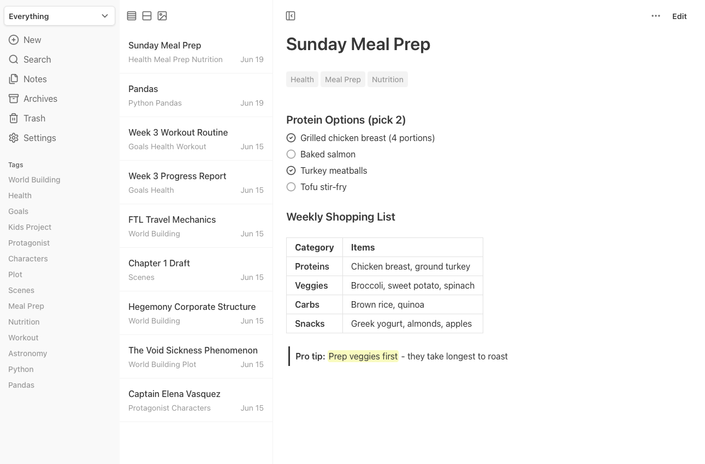

Write it Down. Own it Forever.
A clean, quiet space to think. Your notes live in standard Markdown within a local SQLite database. No vendor lock-in, no distractions.

Focus Areas
Organize with flexible tags, not rigid folders. Create custom views called "Focus Modes" that adapt with your priorities.
Instant Search
Full-text search across titles and content with BM25 ranking. Find what you need instantly as you type, including archived and deleted notes.
Version History
Every save keeps a snapshot of the previous version. Browse a note's history and restore any earlier version. No account, no sync tier.
Templates
Create reusable note templates with placeholders. Quickly start new notes with consistent structure and formatting.
Simple & Lightweight
Single Go binary or Docker Compose. ~20MB memory, minimal CPU usage. Your choice, your infrastructure.
Rich Markdown
Everything you need to structure your thoughts: tables, code blocks, task lists, highlights, and more, all with standard Markdown.
Future-Proof Storage
Standard Markdown files, local SQLite database. No vendor lock-in, no proprietary formats. Your notes are yours, accessible forever.
Thoughtful by Design
The interface disappears so your thinking can surface. A minimal palette and essential features keep you focused on your ideas.
Smart Organization
Archive notes for later, soft delete with restore capability. Automatic cleanup keeps your workspace tidy without losing important content.
Keyboard Shortcuts
Essential keyboard shortcuts for creating notes, searching, text formatting, and navigation throughout the interface.
Mobile-Friendly
Responsive design that works well on mobile devices. Can be installed as a PWA for quick access from your home screen.
Built to Last
Minimal dependencies, lean codebase. Reduces bit rot risk and ensures long-term stability.
Multiple Views
Switch between list, card, and gallery layouts. Each view optimized for different types of content.
Image Support
Drag and drop images directly into notes or paste from clipboard. Gallery view organizes visual content with automatic image management.
Dark Mode
Switch to a dark theme for comfortable reading in low-light environments. Easy on the eyes during late-night writing sessions.
Import Notes
Migrate your existing notes seamlessly with simple import options. Supports Markdown files and plain text formats to bring your knowledge forward.
Export Notes
Download complete backups with Markdown files for other apps, JSON data for programmatic import, and all referenced images preserved.
Formatting Toolbar
Format your notes effortlessly with an intuitive toolbar. Quick access to headings, lists, links, checklists, and other essential formatting options.
Pinned Notes
Keep important notes at the top of your list. Pin frequently accessed notes for quick access whenever you need them.
Canvas Experimental
Spatial organization for visual thinkers. Arrange notes and images on an infinite canvas to see connections and build your mental model.
MCP Server Experimental
Connect your favorite AI apps to chat naturally with your notes and uncover hidden connections across everything you've written.